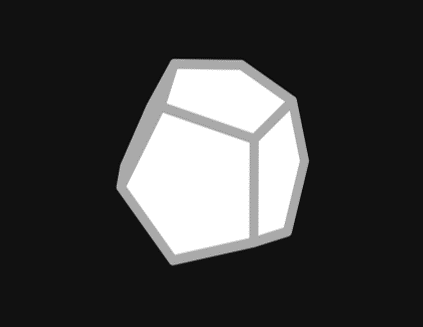

This one is kind of small, but it was still fun to make. It renders the platonic solids on a canvas, but it doesn't use any libraries. Making things like these without libraries really helps deepen your understanding of the math that's behind them.
